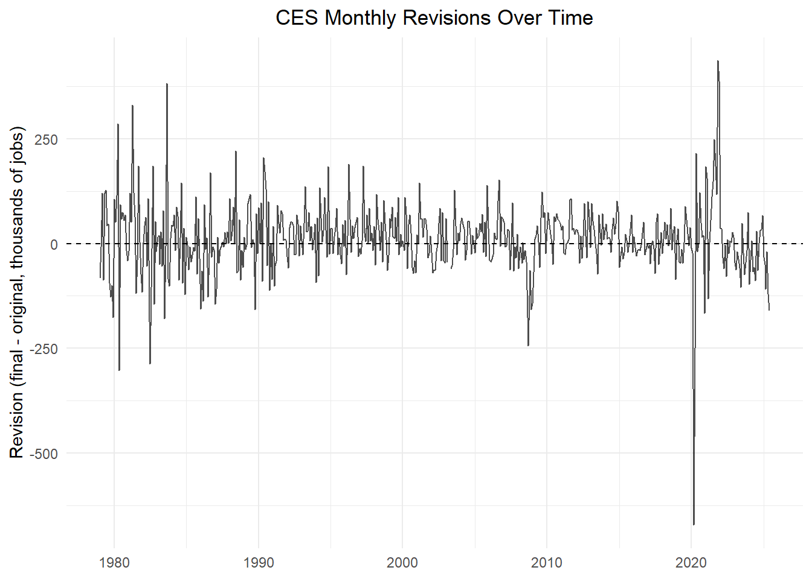
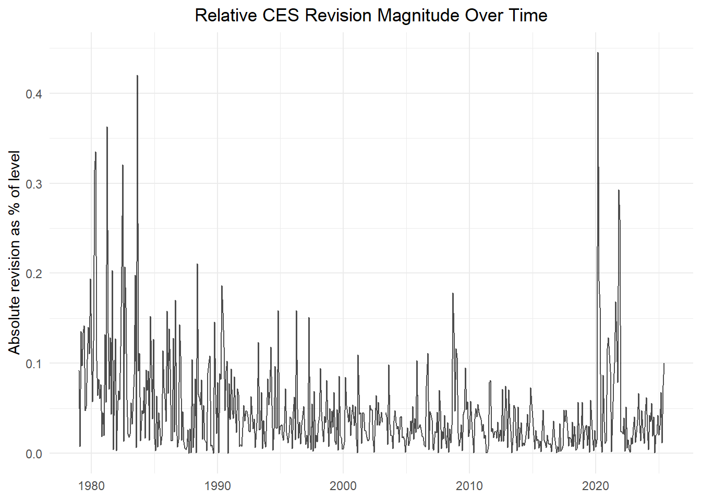
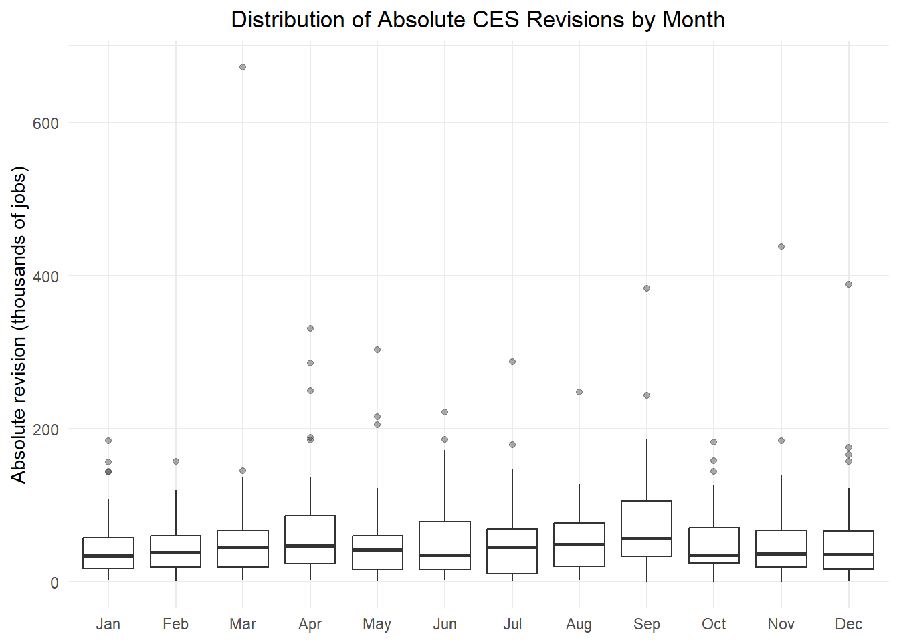
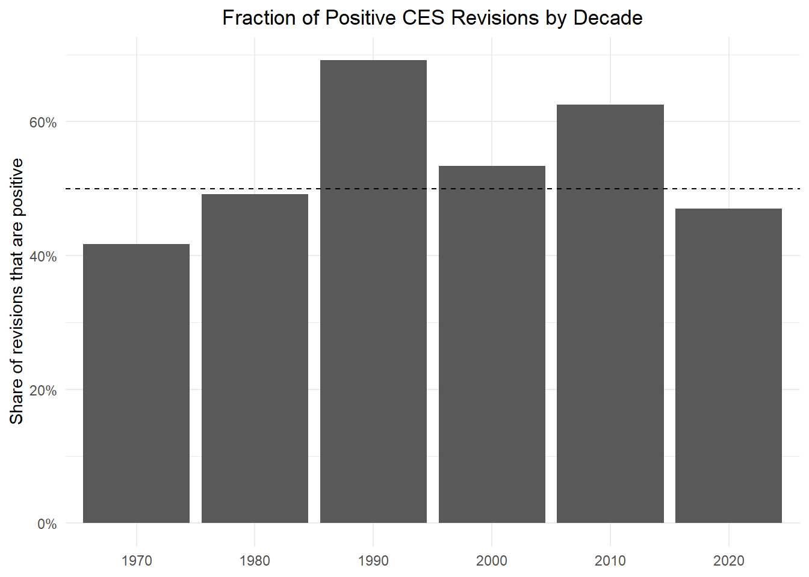

CODE: Import Libraries
library(httr2)
library(rvest)
library(dplyr)
library(tidyr)
library(stringr)
library(lubridate)
library(purrr)
library(readr)
library(knitr)
library(tidyverse)
library(infer)
library(scales)The CES (Current Employment Statistics) can be a good statistic for economic analytics, however sometimes the BLS (Bureau of Labor Statistics), adjusts this data so that we can take into account certain seasonal shifts. Consider the scenario, it’s holiday season and demand for workers in the retail industry increases due to there being a massive increase in shopping volume. This hiring trend is only temporary, once the season is over the number of employees will adjust to what it was prior. This is not great for economists who are interested on actual job growth to determine the health of the economy. For this reason, BLS tends to adjust the numbers so that it’s a better representation of the actual job growth.
The way these data is collected is via surveys, however not all surveys are completed in time. That means BLS needs to make some estimations for the surveys that have not been competed, and when the surveys are fully submitted, that data is adjusted to reflect the real number. In this article, we will analyze the severity of these estimations. Keep in mind that the data will be from 1979 to 2015.
library(httr2)
library(rvest)
library(dplyr)
library(tidyr)
library(stringr)
library(lubridate)
library(purrr)
library(readr)
library(knitr)
library(tidyverse)
library(infer)
library(scales)get_ces_total_nonfarm <- function(from_year = 1979, to_year = 2025) {
ces_url <- "https://data.bls.gov/pdq/SurveyOutputServlet"
resp <- request(ces_url) |>
req_method("POST") |>
req_body_form(
request_action = "get_data",
reformat = "true",
from_year = from_year,
to_year = to_year,
#This is the key series id: Total nonfarm, SA, all employees, thousands
series_id = "CES0000000001"
) |>
req_perform()
results_html <- resp_body_html(resp)
#there are multiple tables; the data table was found to be the second one
tables <- results_html |> html_elements("table")
table_raw <- tables[[2]] |> html_table(fill = TRUE)
#adjust the data to show YYYY-MM-DD
ces_long <- table_raw |>
select(Year, Jan:Dec) |>
pivot_longer(
cols = -Year,
names_to = "month",
values_to = "level"
) |>
mutate(
month = str_sub(month, 1, 3),
# combine to "YYYY Mon" for lubridate::ym
ym_str = paste(Year, month),
date = ym(ym_str),
# parse numbers, dropping footnote letters like "B", etc.
level = parse_number(level)
) |>
select(date, level) |>
arrange(date) |>
drop_na()
# Restrict to exactly Jan 1979 - Jun 2025 as required
ces_long |>
filter(date >= as.Date("1979-01-01"),
date <= as.Date("2025-06-01"))
}
ces_levels <- get_ces_total_nonfarm()
knitr::kable(head(ces_levels) |> dplyr::rename_with(~ stringr::str_to_title(.x)), format = "simple")| Date | Level |
|---|---|
| 1979-01-01 | 88808 |
| 1979-02-01 | 89055 |
| 1979-03-01 | 89479 |
| 1979-04-01 | 89417 |
| 1979-05-01 | 89789 |
| 1979-06-01 | 90108 |
resp <- request("https://www.bls.gov/web/empsit/cesnaicsrev.htm") |>
req_headers(
"User-Agent" = "Mozilla/5.0 (Windows NT 10.0; Win64; x64) AppleWebKit/537.36 (KHTML, like Gecko) Chrome/122.0.0.0 Safari/537.36"
) |>
req_error(is_error = \(x) FALSE) |>
req_perform()
page_html <- resp_body_html(resp)
# Helper: check if a table corresponds to a given year
table_matches_year <- function(tbl, year) {
# must have at least 2 columns
if (ncol(tbl) < 2) return(FALSE)
col2 <- suppressWarnings(as.numeric(tbl[[2]]))
col2 <- col2[!is.na(col2)]
any(head(col2, 12) == year)
}
# Extract all tables once
raw_tables <- page_html |>
html_elements("table") |>
map(~ tryCatch(
html_element(.x, "tbody") |> html_table(header = FALSE),
error = function(e) NULL
)) |>
compact()
# Scraper (robust to inconsistent column names)
scrape_revision_year_alt2 <- function(year, tables = raw_tables) {
# Find matching table
tbl <- tables |> keep(~ table_matches_year(.x, year)) |> pluck(1, .default = NULL)
# If none found → return clean empty tibble
if (is.null(tbl)) {
warning(sprintf("No revision table found for year %s", year))
return(tibble(date = as.Date(character()), original = numeric(),
final = numeric(), revision = numeric()))
}
# Ensure table has enough columns
if (ncol(tbl) < 8) {
warning(sprintf("Table for year %s does not have expected columns", year))
return(tibble(date = as.Date(character()), original = numeric(),
final = numeric(), revision = numeric()))
}
# Extract by column INDEX, not names
Month_col <- tbl[[1]]
Orig_col <- tbl[[3]]
Final_col <- tbl[[5]]
Revision_col <- tbl[[8]]
out <- tibble(
Month = gsub("\\.", "", Month_col),
original = as.numeric(gsub(",", "", Orig_col)),
final = as.numeric(gsub(",", "", Final_col)),
revision = as.numeric(gsub(",", "", Revision_col))
) |>
slice_head(n = 12) |>
mutate(date = as.Date(sprintf("%s-%02d-01", year, match(Month, month.abb)))) |>
select(date, original, final, revision)
out
}
# Run over all years
revisions <- map_df(1979:2025, scrape_revision_year_alt2)
knitr::kable(head(revisions) |> dplyr::rename_with(~ stringr::str_to_title(.x)), format = "simple")| Date | Original | Final | Revision |
|---|---|---|---|
| 1979-01-01 | 325 | 243 | -82 |
| 1979-02-01 | 301 | 294 | -7 |
| 1979-03-01 | 324 | 445 | 121 |
| 1979-04-01 | 72 | -15 | -87 |
| 1979-05-01 | 171 | 291 | 120 |
| 1979-06-01 | 97 | 225 | 128 |
# the joined table will hold useful analysis columns for future tasks
ces <- ces_levels |>
left_join(revisions, by = "date") |>
# create year, month, decade, etc.
mutate(
year = year(date),
month = month(date),
month_name = month(date, label = TRUE, abbr = TRUE),
decade = floor(year / 10) * 10,
# relative revision magnitudes
abs_revision = abs(revision),
rel_revision_final = abs_revision / final, # as fraction of final estimate
rel_revision_level = abs_revision / level, # as fraction of level
revision_pct_level = revision / level # signed % of level
)format_numbers_kable <- function(df, decimals = 2, format = "simple", exclude = NULL) {
df_fmt <- df |>
# Format numeric columns except excluded ones
mutate(
across(
where(is.numeric) & !all_of(exclude),
~ number(.x,
big.mark = ",",
accuracy = 10^(-decimals))
)
) |>
# Convert all columns to character for consistent printing
mutate(across(everything(), as.character)) |>
# Clean header names
rename_with(~ .x |>
str_replace_all("_", " ") |>
str_to_title()
)
kable(df_fmt, format = format)
}overall_stats <- ces |>
summarize(
"Total Months" = n(),
"Level Mean" = mean(level, na.rm = TRUE),
"S.D. Level" = sd(level, na.rm = TRUE),
"Mean Revision" = mean(revision, na.rm = TRUE),
"S.D. Revision" = sd(revision, na.rm = TRUE),
"MEan ABS Revision" = mean(abs_revision, na.rm = TRUE),
"Mean REL Revision Level" = mean(rel_revision_level, na.rm = TRUE),
"Mean REL Revision Final" = mean(rel_revision_final, na.rm = TRUE),
"Frac. Positive Revision" = mean(revision > 0, na.rm = TRUE)
)
format_numbers_kable(overall_stats, decimals = 2)| Total Months | Level Mean | S.d. Level | Mean Revision | S.d. Revision | Mean Abs Revision | Mean Rel Revision Level | Mean Rel Revision Final | Frac. Positive Revision |
|---|---|---|---|---|---|---|---|---|
| 558.00 | 124,707.39 | 19,993.52 | 11.26 | 83.37 | 56.82 | 0.00 | -0.22 | 0.57 |
The data above is a small snippet of what the statistics look like. The most interesting statistic to me is that positive revisions result in about 57% of the time. That means more then half the time, BLS tends to predict a lower value then it’s in reality.
extreme_revisions <- ces |>
summarize(
max_revision = max(revision, na.rm = TRUE),
max_revision_date = date[which.max(revision)],
min_revision = min(revision, na.rm = TRUE),
min_revision_date = date[which.min(revision)]
)
format_numbers_kable(extreme_revisions, decimals = 2)| Max Revision | Max Revision Date | Min Revision | Min Revision Date |
|---|---|---|---|
| 437.00 | 2021-11-01 | -672.00 | 2020-03-01 |
We can see that the biggest impact on how well BLS can make predictions is impacted by a economic diaster. We see they predicted very positive compared to the reality of the 2020 crash, and they did not successfully predict the impressive 2021 turn around in job growth.
positive_by_year <- ces |>
group_by(year) |>
summarize(
frac_positive = mean(revision > 0, na.rm = TRUE),
mean_abs_rev = mean(abs_revision, na.rm = TRUE),
.groups = "drop"
) |>
arrange(desc(frac_positive))
format_numbers_kable(head(positive_by_year), decimals = 2, exclude = "year")| Year | Frac Positive | Mean Abs Rev |
|---|---|---|
| 2010 | 0.92 | 48.33 |
| 2014 | 0.92 | 40.17 |
| 2021 | 0.92 | 180.50 |
| 1993 | 0.83 | 39.08 |
| 2001 | 0.83 | 44.00 |
| 1980 | 0.75 | 105.67 |
These are some of the years where the BLS prediction has underestimated the real numbers. This means that they predicted a worse turn out in jobs then there actually was, counting month by month. It’s expected to see 2010 and 2020 here, given that due to drastic economic crashes, BLS was not very optimistic for job growth.
positive_by_decade <- ces |>
group_by(decade) |>
summarize(
frac_positive = mean(revision > 0, na.rm = TRUE),
mean_abs_rev = mean(abs_revision, na.rm = TRUE),
.groups = "drop"
) |>
arrange(desc(frac_positive))
format_numbers_kable(positive_by_decade, decimals = 2, exclude = "decade")| Decade | Frac Positive | Mean Abs Rev |
|---|---|---|
| 1990 | 0.69 | 51.42 |
| 2010 | 0.62 | 35.19 |
| 2000 | 0.53 | 48.06 |
| 1980 | 0.49 | 72.15 |
| 2020 | 0.47 | 86.94 |
| 1970 | 0.42 | 94.33 |
Here we can see the decades that BLS has predicted a worse turn out in jobs then there actually were. There was a steady rise in job growth during the 90s, seems like BLS was off the mark many times, predicting a less growth then there was.
rel_rev_by_decade <- ces |>
group_by(decade) |>
summarize(
mean_rel_revision_level = mean(rel_revision_level, na.rm = TRUE),
median_rel_revision_level = median(rel_revision_level, na.rm = TRUE),
.groups = "drop"
)
format_numbers_kable(rel_rev_by_decade, decimals = 5, exclude="decade")| Decade | Mean Rel Revision Level | Median Rel Revision Level |
|---|---|---|
| 1970 | 0.00105 | 0.00107 |
| 1980 | 0.00076 | 0.00060 |
| 1990 | 0.00045 | 0.00036 |
| 2000 | 0.00036 | 0.00031 |
| 2010 | 0.00025 | 0.00021 |
| 2020 | 0.00058 | 0.00033 |
The table shows how the average size of CES revisions (relative to total employment) has changed across decades. It reveals that revisions have generally become smaller and the estimates more accurate over time, with a temporary increase in the 2020s probably because of economic volatility.
rev_by_month <- ces |>
group_by(month, month_name) |>
summarize(
mean_abs_rev = mean(abs_revision, na.rm = TRUE),
mean_rel_rev = mean(rel_revision_level, na.rm = TRUE),
.groups = "drop"
)
# format to 2 dec
step1 <- rev_by_month |>
mutate(
mean_abs_rev = scales::number(mean_abs_rev, big.mark = ",", accuracy = 0.01)
)
# format to 5 dec
step2 <- step1 |>
mutate(
mean_rel_rev = scales::number(mean_rel_rev, big.mark = ",", accuracy = 1e-05)
)
format_numbers_kable(step2, decimals = 2, exclude = c("month"))| Month | Month Name | Mean Abs Rev | Mean Rel Rev |
|---|---|---|---|
| 1 | Jan | 48.23 | 0.00041 |
| 2 | Feb | 43.72 | 0.00036 |
| 3 | Mar | 64.63 | 0.00053 |
| 4 | Apr | 69.37 | 0.00062 |
| 5 | May | 55.53 | 0.00049 |
| 6 | Jun | 53.47 | 0.00046 |
| 7 | Jul | 53.39 | 0.00048 |
| 8 | Aug | 53.85 | 0.00042 |
| 9 | Sep | 80.15 | 0.00070 |
| 10 | Oct | 50.67 | 0.00044 |
| 11 | Nov | 55.07 | 0.00045 |
| 12 | Dec | 54.33 | 0.00044 |
This data indicates that revision amounts are not evenly distributed across the year, with months like March, April, and September showing noticeably higher average revisions. This is our first strong evidence of the impact that seasonal volumes can have on the job market, and the difficulty of predicting them accurately.
p1_levels_over_time <- ces |>
ggplot(aes(x = date, y = level / 1000)) +
geom_line() +
labs(
title = "CES Employment Level Over Time",
x = NULL,
y = "Employment level (millions of jobs)"
) +
theme_minimal() +
theme(
plot.title = element_text(hjust = 0.5)
)
p1_levels_over_time
This is a great indication of the total jobs, and how that metric has moved over time. This is totally expected as population grows, so will the number of jobs that people hold. AS its mentioned before in this report, 2020 always makes a clear mark, leaving a noticeable indication of the impact it had.
p2_revisions_over_time <- ces |>
ggplot(aes(x = date, y = revision)) +
geom_hline(yintercept = 0, linetype = "dashed") +
geom_line(alpha = 0.7) +
labs(
title = "CES Monthly Revisions Over Time",
x = NULL,
y = "Revision (final - original, thousands of jobs)"
) +
theme_minimal() +
theme(
plot.title = element_text(hjust = 0.5)
)
p2_revisions_over_time
As it was mentioned in the intro, there is a level of estimation that takes place due to surveys not being turned in on time. Here we can see the impact of those assumptions, how accurate they have been over time. The smaller the heart beat shapes are, the better. While for a heart beat to be still is considered bad, here it would be best case scenario. It would indicate that the assumption is dead on with the real figure.
Its clear that the assumptions made by BLS were improving decade after decade, the 2008 crash being the first event to truly break that pattern, and then finally 2020 which no one saw coming.
p3_rel_revision <- ces |>
ggplot(aes(x = date, y = rel_revision_level * 100)) +
geom_line(alpha = 0.7) +
labs(
title = "Relative CES Revision Magnitude Over Time",
x = NULL,
y = "Absolute revision as % of level"
) +
theme_minimal() +
theme(
plot.title = element_text(hjust = 0.5)
)
p3_rel_revision
Please keep in mind that these are percentages, and we can see the worst prediction happen in 2020, with a miscalculation of about 0.45% from the total employment. This is a steady pattern that we have seen throughout the report so far.
p4_rev_by_month <- ces |>
ggplot(aes(x = month_name, y = abs_revision)) +
geom_boxplot(outlier.alpha = 0.4) +
labs(
title = "Distribution of Absolute CES Revisions by Month",
x = NULL,
y = "Absolute revision (thousands of jobs)"
) +
theme_minimal() +
theme(
plot.title = element_text(hjust = 0.5)
)
p4_rev_by_month
The revisions placed in this chart are of absolute value, meaning both positive and negative revisions are included. I want to give a bit of a description on how to read it for those that may not know. The dots are some of the major revision outliers, and march is expected, can you guess what year, yup 2020. The line tracing upwards from the boxes, is how we expect the revisions to stretch out. Finally the boxes indicate the middle 50% of all the revisions, with the ine inside being the median.
Generally speaking, september being the month that BLS tends to struggle the most with predictions, this may be due to many things. Lots of collage kids going back to school, can cause a overstatement by BLS, or maybe its the holiday season that causes a job spike.
p5_frac_positive_decade <- positive_by_decade |>
ggplot(aes(x = factor(decade), y = frac_positive)) +
geom_col() +
geom_hline(yintercept = 0.5, linetype = "dashed") +
scale_y_continuous(labels = scales::percent_format(accuracy = 1)) +
labs(
title = "Fraction of Positive CES Revisions by Decade",
x = NULL,
y = "Share of revisions that are positive"
) +
theme_minimal() +
theme(
plot.title = element_text(hjust = 0.5)
)
p5_frac_positive_decade
This is the data from the statistics stated in 3.4, shown visually. these isn’t much to add other then repeating myself.
ces_neg_test <- ces |>
mutate(
period = if_else(year < 2000, "pre2000", "post2000"),
negative = revision < 0
)
neg_revision_prop_test <- ces_neg_test |>
prop_test(negative ~ period, order = c("pre2000", "post2000"))
format_numbers_kable(neg_revision_prop_test, decimals = 3, exclude = "chisq_df")| Statistic | Chisq Df | P Value | Alternative | Lower Ci | Upper Ci |
|---|---|---|---|---|---|
| 0.718 | 1 | 0.397 | two.sided | -0.125 | 0.047 |
First lets state what is being tested.
The estimate being tested is:
\[ p(\text{negative} \mid \text{pre2000}) - p(\text{negative} \mid \text{post2000}) \]
So first, p-value is nearly 0.4, this shows no statistical evidence that there is fraction of negative revisions change after 2000. For there to be evidence of this, p-value must be at most 0.1, our metric is way off the mark to suggest that.
Second, a confidence interval -0.125 to 0.047, the interval is crossing 0, so that means the data cannot rule out either direction. Therefore, there is no evidence that negative CES revisions became more common after 2000.
ces_mean_rev_test <- ces |>
mutate(period = if_else(year < 2020, "pre2020", "post2020"))
mean_revision_ttest <- ces_mean_rev_test |>
t_test(revision ~ period, order = c("pre2020", "post2020"))
format_numbers_kable(mean_revision_ttest, decimals = 3)| Statistic | T Df | P Value | Alternative | Estimate | Lower Ci | Upper Ci |
|---|---|---|---|---|---|---|
| 0.688 | 69.531 | 0.494 | two.sided | 12.260 | -23.308 | 47.827 |
The same pattern is seen here, as we saw in the test before. The two-sample t-test comparing average CES revisions before and after 2020 finds no statistical evidence of a change in revision size post-2020 (t = 0.688, p = 0.494). The estimated difference in means (pre2020 − post2020 = 12.26) is small and statistically indistinguishable from zero.
The 95% confidence interval (−23.3 to 47.8) crosses zero, meaning the data cannot rule out either direction of difference. Therefore, there is no evidence that average CES revisions increased after 2020.
Statement 1:
“In my opinion, today’s Jobs Numbers were RIGGED in order to make the Republicans, and ME,look bad,” - Donald J. Trump
This is a very ambiguous statement, but there is something to note. Trump is stating that the numbers were “RIGGED” as a way to make the Republicans look bad. There is some way to fact check this. If we look into the past data of BLS predictions we can see throughout this report that there is a clear indicator when BLS tend to struggle with making correct predictions. Whenever there is a crash in the market, this causes for very unpredictable times. Looking into the statistics uncovered in 3.3 table, we can see the exact same pattern. When Democrats were in charge after the 2008 crash, BLS struggled to make predictions in the exact same way that they did in 2021 when the Republicans were in charge.
Statistics in 3.4, also visualizations 2 and 3 back this up, with 2020 having the largest mean absolute revisions, due to the drastic economical crash that occurred. The markets are now very unpredictable, and revisions should be expected.
The statement is also not supported by either of the two test that were ran on this report. As stated in the beginning, the statement is ambiguous, as we do not know if the President is stating that even the actual job numbers are “rigged”, is that’s the case, we can’t prove or disprove that here. However as for favoritism regarding a party, there is no real data to suggest such a thing, since the exact same behavior is seen when President Obama was in office, indicating that it’s a market issue and not a political party one.
This statement gets a False verdict.
Statement 2:
“BLS making predictions only hurts the markets and is not an ideal economic statistic to use and therefore should be dismissed” - Johnny Bravo (Made up Politician)
To tackle this statement lets look into some visualizations, like all of them for example. They all are visualizations of how inaccurate BLS has been throughout history. However, in the market world, everything is probabilities and estimates. No one knows where the market is heading and how it will shift, but statistics like the job market, help economist become more confident in their predictions. Its not a statistic that will solely determine a prediction, but it can help in seeing the bigger picture of how the economy is doing.
Furthermore the test we ran show consistency, and more important the charts and statistics showed that the system that BLS has applied was getting very accurate over time. It will never be 100% certain but it can be very close, and thats all that matters. Economic disasters like COVID or the 2008 crash introduce uncertainty, which will always cause for greater revisions.
This statement gets a Pants on Fire verdict.